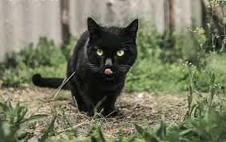

About Cats
Cats are small, carnivorous mammals that are often kept as pets. They are known for their agility, playfulness, and ability to hunt vermin. Cats have been domesticated for thousands of years and are one of the most popular pets worldwide.
Disclaimer: The paragraph above was recommended by the AI assistant on VScode and I just had to include it because it was quite funny.
I myself have two Siberian cats named Lily and Panda, check them out Here
Different Types of Cats
Simply enough, there are a whole lot of cat types. There are 73 official cat breeds according to The International Cat Association. Thats a whole lot of cats! Below, I will be describing each cat with a short summary and a picture.
Now, on to showing off all of those cat breeds!
CAT BREEDS





Info comes from various sources including, but not limited to, The Cat Fanciers' Association, The Spruce Pets, and The International Cat Association.